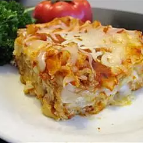

Lasagnya

The Italian favorite of lasagne or lasagna that we all know and love originated in Italy in the city of Naples during the Middle Ages.
One of the first references to modern-day lasagne can be found in a 14th-century English cookbook that highlighted a dish with layers of pasta without the tomatoes.
Ingredients
- 1 (16 ounce) package lasagna noodles
- 4 cups ricotta cheese
- 4 eggs
- ¼ cup grated Parmesan cheese
- salt and pepper to taste
- 1 teaspoon olive oil
- 3 cloves garlic, minced
- 1 (32 ounce) jar spaghetti sauce
- 1 teaspoon Italian seasoning
- 2 cups shredded mozzarella cheese
Steps
- Preheat the oven to 350 degrees F (175 degrees C).
- Bring a large pot of lightly salted water to a boil.
Add lasagna noodles and cook for 8 to 10 minutes or until al dente; drain and lay noodles flat on foil to cool.
- Mix ricotta, eggs, Parmesan cheese, salt, and pepper together in a bowl; mix well.
- Heat oil in a medium saucepan over medium heat; add garlic and sauté 2 minutes.
Stir in spaghetti sauce and Italian seasoning until warmed through, stirring occasionally, 2 to 5 minutes.
- Spread 1/2 cup of sauce on the bottom of a 9x13-inch baking dish.
Cover with a layer of noodles.
Spread 1/2 of the ricotta mixture over noodles; top with another layer of noodles.
Pour 1 1/2 cups of sauce over noodles and spread the remaining ricotta over the sauce.
Top with remaining noodles and sauce; sprinkle with remaining mozzarella.
Cover with a greased sheet of foil.
- Bake in the preheated oven until cheese is melted and bubbly, about 45 minutes.